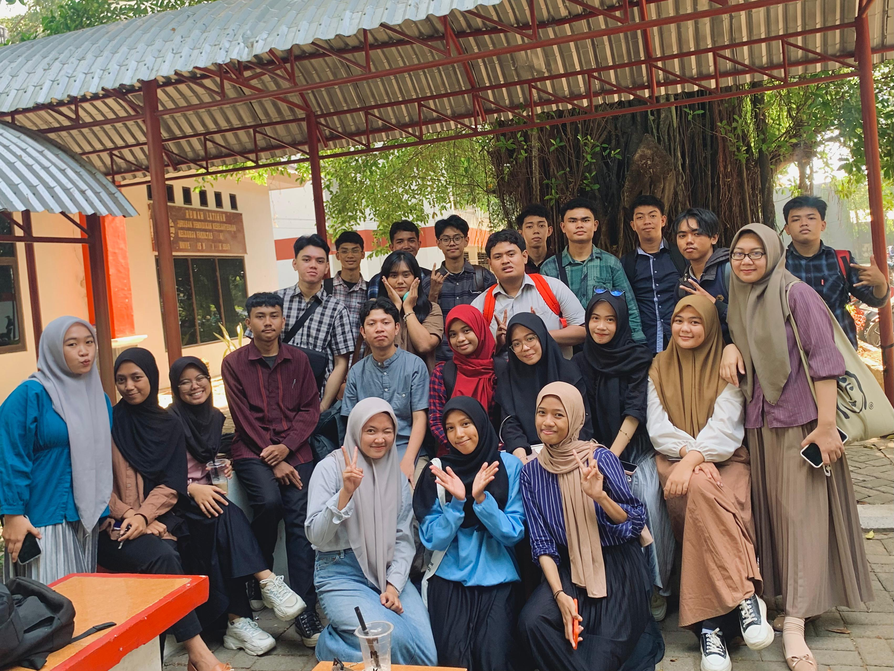
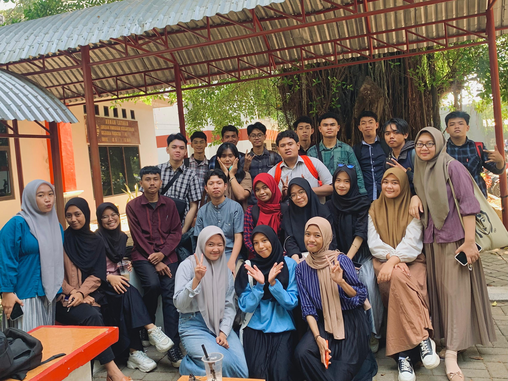

Sekolah Asal SMK Negeri1 Barru
Universitas Negeri Makassar
Kejarlah akhirat, Inn Syaa Allah dunia mengikuti
Banyak sekali pengalaman yang saya dapatkan selama berkuliah di jurusan teknik komputer mulai dari mendapatkan
relasi baru, belajar untuk manajemen waktu seperti kapan saya dapat memprioritaskan belajar, mengerjakan tugas, serta
beristirahat. Pengalaman lain yang saya dapatkan selama berkuliah di jurusan teknik komputer adalah mengikuti beberapa
proyek kelompok seperti kompetisi Smart Car 4WD yang dapat mengembangkan soft skill dan hard skill saya seperti
bertanggung jawab dalam pengembangan software serta saya belajar cara berkomunikasi yang baik dalam tim.
Melakukan praktikum juga merupakan salah satu pengalaman yang saya dapatkan selama berkuliah di jurusan teknik komputer.
Praktikum dapat mengasah cara berpikir saya serta belajar untuk berpikir kritis dalam melakukan praktikum. Dari Praktikum saya
belajar mulai dari mendownload Aplikasi yang dibutuhkan dalam praktikum, mempelajari dasar dasar dari materi praktikum, lalu mem-
praktikannya langsung saat kelas berlangsung. Semua pengalaman yang saya dapatkan selama berkuliah dapat mengembangkan
kemampuan saya baik soft skill maupun hard skill.
Daftar Mata Kuliah:
1. Pendidikan Kewarganegaraan
2. Basis Data
3. Struktur Data
Daftar Dosen:
Foto Kegiatan:
 


| No | Nama | Jenis Kelamin | Alamat | Asal Sekolah | |
|---|---|---|---|---|---|
| Lengkap | Panggilan | ||||
| 1 | Andi Mahdaniar Patoppoi. Z | Niar | Perempuan | Kasomberang Permai | SMAN 9 Jeneponto |
| 2 | Alia Amini Azhar | Alia | Perempuan | Jl. Toddopuli VI | SMK Telkom Makassar |
| 3 | Hana Awaliyah | Hana | Perempuan | Jl. Masale IV No. 6 | MA Pondok Pesantren Putri Ummul Mukminin |
| 4 | Aqda | Aqda | Perempuan | Jl. Greder No. 9 | SMKS PPM Tana Toraja |